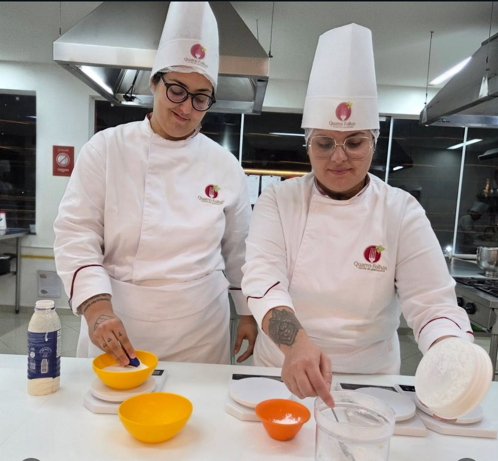

Uma vivência prática para aproximar pessoas, destravar conversas e criar memória em equipe.
Empresas e marcas
Experiências gastronômicas para equipes, marcas e projetos especiais
A Quatro Folhas cria experiências que conectam pessoas, fortalecem relacionamento e colocam a marca em contexto real: prática, conteúdo e mesa em uma escola profissional equipada e reconhecida.
Team buildingParceriasconteúdoLocação
Receita, demonstração, degustação e conteúdo em um contexto aut?ntico de cozinha e mesa.
Cozinha, recepção e ambientes preparados para receber equipes, convidados, filmagens e ativações.
Parceiros acessam proposta e media kit pelo site, com senha, para manter tudo organizado.
B2B
Uma escola de gastronomia a servi?o da experiência
Formatos para RH, marketing, endomarketing, ag?ncias, produtoras, marcas de alimentos, bebidas, Utensílios e lifestyle.
Team Building
dinâmicas práticas para integração, colaboração e relacionamento entre equipes.
Ver formatoTreinamento de equipes
Para qualificar times de cozinha e atendimento, com aulas na Quatro Folhas ou na empresa, conforme objetivo e rotina.
Falar no WhatsAppAuxiliar de Cozinha (para equipes)
formação prática para padronizar processos, reforçar boas práticas e melhorar efici?ncia no dia a dia da operação.
Falar no WhatsAppParcerias e ativações
Aulas, conteúdos, eventos e ativações que inserem a marca em um contexto gastronômico real.
Conhecer possibilidadesProduções e campanhas
Ambiente gastronômico para fotos, v?deos, receitas, registros e imprensa.
Consultar espaçoLocação da cozinha
Estrutura equipada para gravações, workshops, testes e projetos especiais.
Ver LocaçãoHist?rico em produções
TV, streaming, realities e conteúdos gastronômicos já escolheram a escola como cenário.
Ver mídiaObjetivos
Para integrar, lan?ar, receber e criar conteúdo

Equipes
Integração com prática e diversão: cozinhar juntos cria troca, colaboração e um momento que fica na memória.
Marcas
ativações em que o produto aparece no preparo, na receita e na degustação, com narrativa clara e contexto real.
Conteúdo
Um cenário gastronômico pronto para filmar, fotografar e produzir materiais com textura, técnica e apelo visual.
Estrutura
A marca entra em um ambiente com presença real
As fotos, cozinhas e ambientes da Quatro Folhas ajudam a transmitir confiança, estrutura e valor percebido em projetos corporativos.



Guia rápido
Qual solu??o combina com o objetivo?
Escolha o objetivo mais próximo do seu projeto para entender o melhor caminho.
ObjetivoFormato indicadopúblicoEntregaAção
Ativar produtoParceria com marcaAlunos, convidados ou clientesAula, receita, demonstração ou eventoVer parceria
Produzir conteúdoLocação da cozinhaEquipe de marca, ag?ncia ou criadoresespaço equipado e ambientadoVer Locação
Receber clientesexperiência fechadaClientes, parceiros ou convidadosAula, degustação e relacionamentoSolicitar
Proposta
Conte o objetivo da sua empresa ou marca
Com objetivo, quantidade de pessoas, data desejada e tipo de ação, a equipe indica o formato mais adequado e monta uma proposta sob medida.